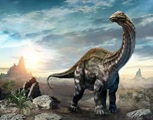
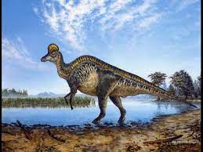
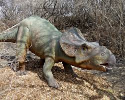
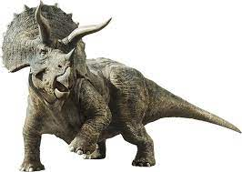
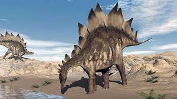

Corythosaurus (gr. "lagarto con casco") es un género representado por dos especies de dinosaurios ornitopodos hadrosáuridos, que vivieron a finales del período Cretácico, hace aproximadamente entre 77 a 75,7 millones de años, en el Campaniense, en lo que hoy es Norteamérica. Corythosaurus es clasificado como un hadrosáurido, en la subfamilias Lambeosaurinae. Estando relacionado con otros hadrosáuridos como Hypacrosaurus, Lambeosaurus y Olorotitan. Con excepción de Olorotitan todos comparten los cráneos y las crestas similares. Sin embargo, la investigación reciente ha sugerido que Olorotitan es un pariente cercano de Corythosaurus, aun sin compartir la forma de la cresta.
Corythosaurus se conoce de muchos especímenes completos, incluido el holotipo casi completo encontrado por Brown en 1911. Al esqueleto holotipo solo falta la última sección de la cola y parte de las extremidades anteriores, pero se conservó con impresiones de escamas poligonales. Corythosaurus es conocido por muchos cráneos con altas crestas. Las crestas se asemejan a las crestas del casuario o a un casco corintio. La función más probable de la cresta es la vocalización. Como en un trombón, las ondas de sonido viajarían a través de muchas cámaras en la cresta, y luego se amplificarían cuando el Corythosaurus exhalara. Un espécimen de Corythosaurus se ha conservado con su última comida en su cavidad torácica. Dentro de la cavidad había restos de agujas de coníferas, semillas, ramas y frutos. Corythosaurus probablemente se alimentó de todos estos elementos. Corythosaurus tiene una longitud estimada de 9 metros, y tiene un cráneo, incluida la cresta, que mide 70,8 centímetros de alto.
Se conocen dos especies, la especie tipo y la más conocida es Corythosaurus casuarius, la otra especie es menos conocida es Corythosaurus intermedius. Ambas especies de Corythosaurus están presentes en niveles ligeramente diferentes de la Formación Dinosaur Park . Ambas coexistían con terópodos y otros ornitisquios, como Daspletosaurus, Brachylophosaurus, Parasaurolophus, Scolosaurus y Chasmosaurus.
Benson et al. en 2012 estimaron que Corythosaurus tiene una longitud promedio de 9 metros.La estimación de longitud anterior de Richard Swann Lull, publicada en 1942, encontró una longitud total ligeramente más larga de 9,4 metros, un tamaño similar al Lambeosaurus lambei , otro lambeosaurinído canadiense.En 1962, Edwin H. Colbert usó modelos de dinosaurios específicos, incluido Corythosaurus, para calcular su peso. El modelo de Corythosaurus utilizado, fue modelado por Vincent Fusco parade un esqueleto montado, y supervisado por Barnum Brown. Después de la prueba, se concluyó que el peso promedio de Corythosaurus fue de 3.82 toneladas.Estimaciones de tallas más recientes de Corythosaurus, publicadas en 2001, encuentran que el género está entre los hadrosáuridos más grandes, solo más pequeños que Shantungosaurus y Parasaurolophus. La longitud total del espécimen de Corythosaurus AMNH 5240 fue de 8.1 metros, con un peso de 3,0785 toneladas.Proporcionalmente, el cráneo es mucho más corto y más pequeño que el de Edmontosaurus, anteriormente Trachodon, Kritosaurus o Saurolophus, pero cuando se incluye su cresta, su área superficial es casi tan grande.
Corythosaurus era un herbívoro que presentaba un comportamiento gregario y se alimentaban de plantas bajas y frutos de los bosques. Su pico no tenía dientes, pero sí la mandíbula, en la que había cientos de pequeños y eran reemplazados constantemente a medida que caían. Estos eran usados para moler la vegetación de la que se alimentaba. Más de 20 cráneos se han encontrado de este dinosaurio. Como con otros lambeosáuridos, este animal tenía una cresta ósea alta, elaborada encima de su cráneo, que contenía canales nasales alargados.Los canales nasales se extendieron en la cresta, primero en los bolsillos separados en los lados, luego en un solo compartimiento central y hacia adelante en el sistema respiratorio.Cualquier vocalización viajaría a través de estos compartimientos elaborados, siendo amplificada.Los científicos especulan que Corythosaurus podría hacer un sonido "como gritos graves como el un viento o un instrumento de latón".Los sonidos serían útiles para comunicar sobre distancias largas, y podrían servir alertar a otro Corythosaurus a la presencia de alimento o a una amenaza potencial de un depredador.Cuando manadas de diferentes géneros se mezclaban, su cresta, que posiblemente debe haber servido para atraer hembras y su agudo sentido olfativo debe haberle ayudado a retornar con los suyos. Alguna vez se pensó que este dinosaurio vivió sobre todo en el agua, debido al aspecto de manos y de pies palmeados.Sin embargo, fue descubierto más adelante que las supuestas "membranas" era de hecho almohadillas de tejido liposo, como se encuentran en muchos mamíferos modernos.
Un conjunto de caracteres fue indicado por Barnum Brown en 1914 para distinguir a Corythosaurus de todos los demás hadrosáuridos de Alberta, un cráneo comparativamente corto con una gran cresta en forma de casco formada por los nasales, los prefrontales y los frontales. Los nasales no están separadas al frente por los premaxilares, un pico estrecho, con una expansión frontal a una nariz alargado; y una pequeña apertura nasal.En 1916 en la versión revisada, Brown expandió el conjunto de caracteres para incluir más características, un cráneo comparativamente corto con una alta cresta en forma de casco formada por nasales, prefrontales y frontales, los nasales no están separadas de la frente por los premaxilares, un pico estrecho, sección expandida en frente de las narinas alargadas, una pequeña apertura de la nariz, una fórmula vertebral de 15 cervicales, 19 dorsales, 8 sacras y más de 61 caudales, posesión de espinas dorsales de altura media, espinas caudales anteriores altas, cheurones largos, omóplatos largos, que poseen una hoja de ancho medio, un radio considerablemente más largo que el húmero, metacarpianos comparativamente cortos, un ilion anteriormente curvado, un isquion largo con una expansión terminal similar a un pie, un pubis con una lamina anterior que es corta y ampliamente expandida al final, un fémur que es más largo que la tibia; las falanges del pie son cortas, que el integumento sobre los lados y la cola se compone de escamas tuberculadas poligonales sin patrón, pero de tamaño graduado en diferentes partes del cuerpo y un vientre con hileras longitudinales de grandes escamas cónicas en forma de lapa separadas por tubérculos poligonales uniformemente grandes.Los supuestos rasgos del hocico son incorrectos porque Brown confundió los premaxilares con los huesos nasales y los huesos nasales con los frontales. Actualmente se sabe que la mayoría de los rasgos postcraneales se comparten con otros lambeosaurinos.
 |
 |
 |
|  |
 |
 |